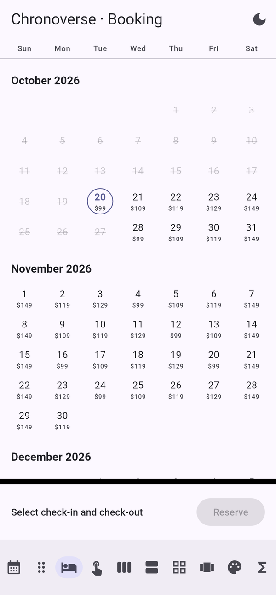
Vertical (booking) Schedule
Schedule Agenda
AgendaHow to use every calendar, picker, view and function in Chronoverse, with complete code examples, theming, languages, events, time zones and best practices.
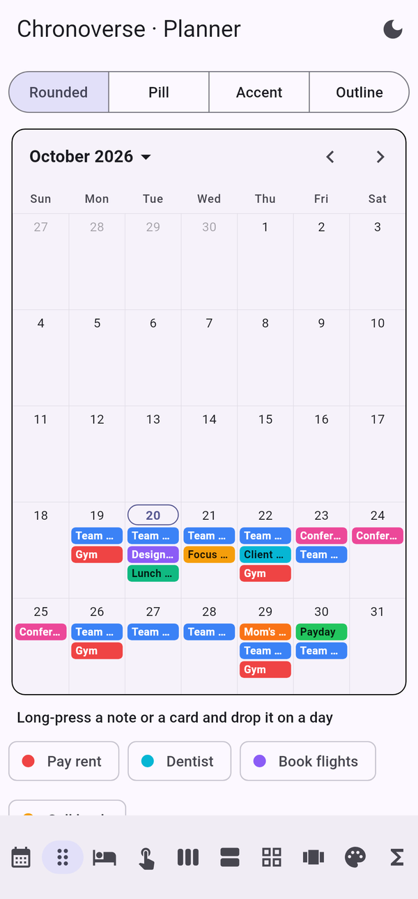
Chronoverse has two layers:
| Import | Contains | Use it for |
|---|---|---|
package:chronoverse/chronoverse.dart | Everything: widgets, dialogs, theme, plus the whole core. | Flutter apps. |
package:chronoverse/core.dart | Pure Dart: Chrono, extensions, formatting, parsing, conversions, time zones, events, recurrence, iCalendar. | Business logic, servers, command-line tools, isolates, tests. |
Naming is consistent: widgets start with Chrono (ChronoCalendar), dialogs with
showChrono, and data classes describe what they hold (DateRange,
CalendarEvent, RecurrenceRule). All dates are plain DateTime values; day-based
APIs ignore the time part.
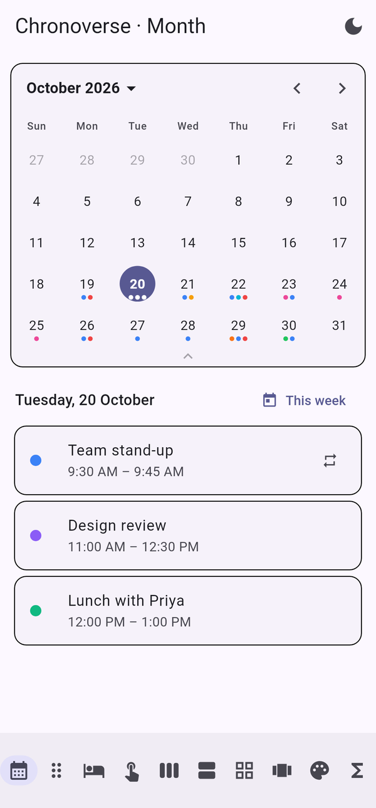
Month with events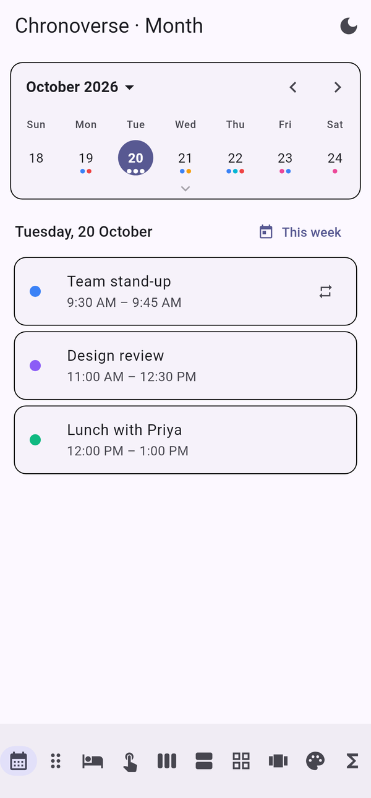
Collapsed to a week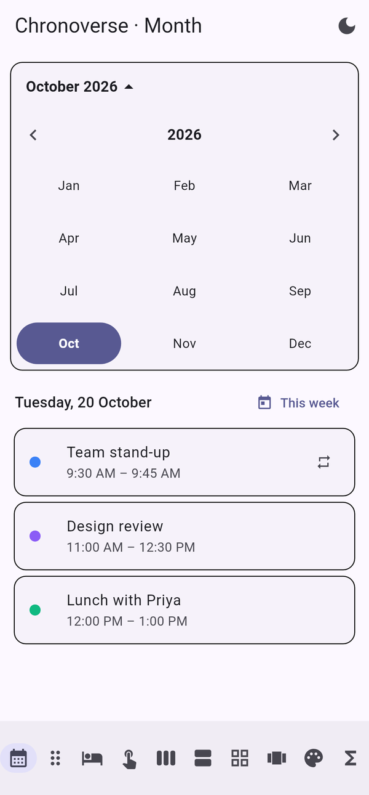
Quick year/monthChronoCalendar(
initialDate: DateTime(2026, 10, 1),
firstDay: DateTime(2020), // navigation limits
lastDay: DateTime(2030, 12, 31),
mode: ChronoSelectionMode.single, // none, single, multiple, range
initialFormat: ChronoCalendarFormat.month, // month, twoWeeks, week
expandable: true, // handle to expand/collapse
formatToggle: true, // month / 2 weeks / week button
showWeekNumbers: true,
sixWeekMonths: true, // constant height
holidayPredicate: (d) => d.month == 12 && d.day == 25,
onDaySelected: (day) => print(day),
onPageChanged: (focused) => print('Now showing $focused'),
)| Option | Default | Effect |
|---|---|---|
showHeader | true | Title, arrows and today button. |
showWeekdays | true | Weekday names row. |
showOutsideDays | true | Days of neighbouring months. |
showTodayButton | true | Shortcut back to today. |
quickPickers | true | Tap the title for year and month grids. |
swipeEnabled | true | Allow swiping between pages. |
firstDayOfWeek | from locale | DateTime.monday … DateTime.sunday. |
weekendDays | from locale | Which days are coloured as weekend. |
headerBuilder | null | Replace the header completely. |
Create a ChronoCalendarController to read and change the calendar from anywhere. It is a
ChangeNotifier, so you can listen to it.
final controller = ChronoCalendarController(
focusedDay: DateTime.now(),
format: ChronoCalendarFormat.week,
mode: ChronoSelectionMode.single,
);
ChronoCalendar(controller: controller, expandable: true);
controller.showWeekOf(DateTime(2026, 12, 21)); // collapse to that exact week
controller.expand(); // full month
controller.collapse(); // back to the focused week
controller.toggleExpanded();
controller.setFormat(ChronoCalendarFormat.twoWeeks);
controller.jumpTo(DateTime(2027, 3, 1));
controller.nextPage();
controller.previousPage();
controller.today();
controller.select(DateTime(2026, 10, 20));
controller.selectRange(DateRange(DateTime(2026, 10, 1), DateTime(2026, 10, 7)));
controller.selectDays([DateTime(2026, 10, 2), DateTime(2026, 10, 9)]);
controller.clearSelection();
controller.selectedDay; // DateTime?
controller.selectedDays; // Set<DateTime>
controller.selectedRange; // DateRange?
controller.isExpanded;
controller.addListener(() => print(controller.focusedDay));
// Dispose it in your State.dispose().| Mode | Callback | Result |
|---|---|---|
ChronoSelectionMode.none | onDaySelected (optional) | Taps are reported, nothing stays selected. |
ChronoSelectionMode.single | onDaySelected | DateTime |
ChronoSelectionMode.multiple | onDaysSelected | Set<DateTime> |
ChronoSelectionMode.range | onRangeSelected | DateRange? (null after the first tap) |
ChronoCalendar(
mode: ChronoSelectionMode.range,
maxRangeDays: 14, // days beyond the limit are greyed while picking
onRangeSelected: (range) {
if (range != null) print('${range.lengthInDays} days');
},
)DateAvailability describes blocked and allowed days in one object. It is shared by the
calendar, the dialogs, the date field, the strip and the vertical calendar.
final availability = DateAvailability(
disablePast: true,
disabledWeekdays: {DateTime.sunday},
disabledDates: [DateTime(2026, 12, 25)],
disabledRanges: [DateRange(DateTime(2026, 11, 3), DateTime(2026, 11, 6))],
predicate: (day) => day.day != 13, // any rule
);
availability.isAvailable(DateTime(2026, 12, 25)); // false
availability.isRangeAvailable(someRange); // false if any day inside is blocked
availability.nextAvailable(DateTime.now()); // first free day
ChronoCalendar(availability: availability);To allow only certain days, use enabledDates. A range that would cross a blocked day
is rejected automatically.
| State | How | Navigation | Selection | Look |
|---|---|---|---|---|
| Normal | default | yes | yes | normal |
| Frozen | controller.freeze() | no | no | normal |
| Read-only | readOnly: true | yes | no | normal |
| Disabled | enabled: false | no | no | greyed out |
Freezing is ideal while a request is in progress: call freeze() before it and
unfreeze() after. Check the state with controller.isFrozen.
Pass a list of CalendarEvent objects, or an eventLoader that returns items for a day.
Repeating events are expanded automatically and indexed once per visible page, so even thousands of
events stay fast.
final events = [
CalendarEvent.allDay(id: '1', title: 'Holiday', start: DateTime(2026, 10, 2), color: 0xFF10B981),
CalendarEvent(
id: '2',
title: 'Design review',
start: DateTime(2026, 10, 14, 10),
end: DateTime(2026, 10, 14, 11, 30),
color: 0xFF6366F1,
recurrence: RecurrenceRule.weekly,
),
];
ChronoCalendar(
events: events,
markerStyle: ChronoMarkerStyle.dots, // dots, bars or chips
onDaySelected: (day) => print(events.on(day).map((o) => o.event.title)),
);
// Or load anything you like:
ChronoCalendar(eventLoader: (day) => myDatabase.itemsFor(day));Each event's color is used for its marker; otherwise markerColor or the theme's
eventColor is used.
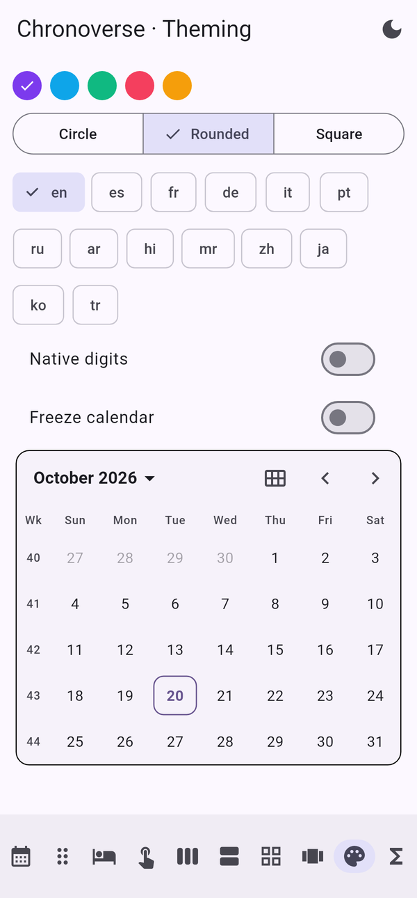
Shapes and coloursSet markerStyle: ChronoMarkerStyle.chips to show titled, coloured cards inside each day. Give
the cells more height so the cards fit.
ChronoCalendar(
events: events,
markerStyle: ChronoMarkerStyle.chips,
chipStyle: const ChronoChipStyle(
shape: ChronoChipShape.accentBar, // rounded, pill, square, accentBar, outlined
height: 16,
fontSize: 10,
),
theme: const ChronoThemeData(cellHeight: 92, dayShape: ChronoDayShape.square, cellPadding: 0),
onItemTap: (item) => openDetails(item),
onDrop: (day, data) => handleDrop(day, data),
canDrop: (day, data) => !day.isWeekend(), // optional rule
)Wrap any widget in ChronoDragItem. Long-press (or drag directly with longPress: false) and
drop it on a day. The target day highlights while hovering.
ChronoDragItem<String>(
data: 'Pay rent',
child: Chip(label: Text('Pay rent')),
);
void handleDrop(DateTime day, Object data) {
if (data is String) {
setState(() => events.add(CalendarEvent.allDay(id: uuid(), title: data, start: day, color: 0xFFF59E0B)));
} else if (data is EventOccurrence) {
// A card was moved from another day: shift the event.
final shift = data.start.daysUntil(day);
// update data.event.start / end by shift days and save
}
}Cards that do not fit show a "+n" indicator. Your own objects work too: return them from
eventLoader and provide itemLabel to give each one a title.

Vertical (booking)ScheduleAgendaChronoVerticalCalendar(
mode: ChronoSelectionMode.range,
availability: DateAvailability(disablePast: true),
lastDay: DateTime.now().addMonths(6),
dayLabelBuilder: (context, day) => Text('\$${priceFor(day)}'),
onRangeSelected: (range) => setState(() => stay = range),
)ChronoScheduleView(
date: DateTime.now().startOfWeek(),
numberOfDays: 5,
events: events,
startHour: 7, endHour: 21, hourHeight: 56,
initialScrollHour: 8,
workHours: (9, 18),
blockedSlots: [DateRangeTime(lunchStart, lunchEnd)],
snap: const Duration(minutes: 15),
enableDrag: true, enableResize: true,
onEventMoved: (occurrence, start, end) => save(occurrence.event.copyWith(start: start, end: end)),
onSlotTap: (time) => createEventAt(time),
)Overlapping events are laid out side by side, all-day events get their own row, and a line marks the current time. Long-press an event to move it; drag its bottom edge to resize.
ChronoYearView(year: 2026, onMonthTap: openMonth, eventLoader: (d) => events.on(d));
ChronoWeekStrip(selectedDate: day, onDateSelected: (d) => setState(() => day = d));
ChronoAgendaView(events: events, range: DateRange(today, today.addDays(14)), onEventTap: open);
ChronoHeatmap(values: {DateTime(2026, 10, 1): 4, DateTime(2026, 10, 2): 9}, onDayTap: (day, value) => showDay(day)); Year and heatmap
Year and heatmap Strip and free slots
Strip and free slots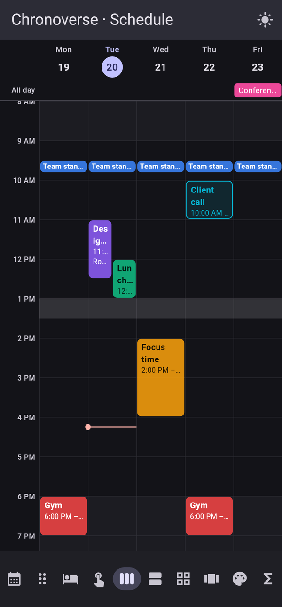
Schedule, dark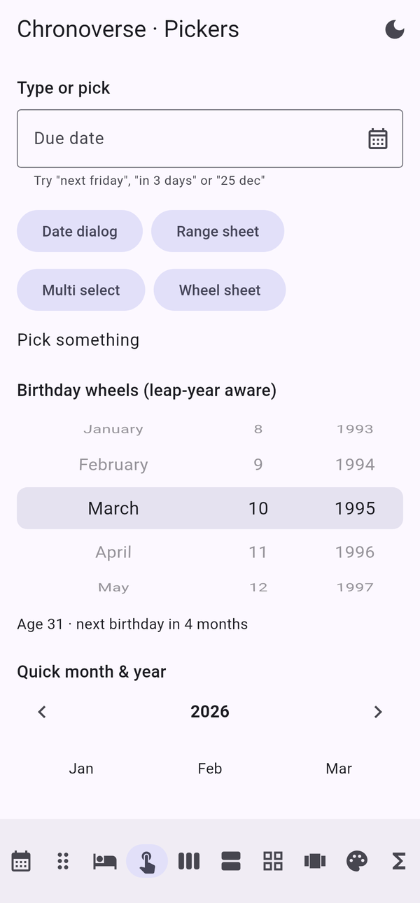
Field, wheels, months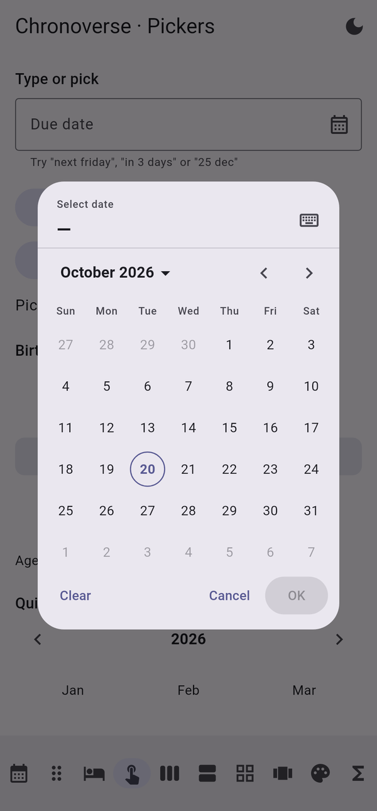
Date dialog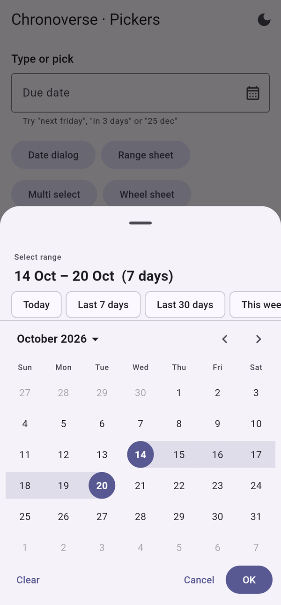
Range sheetfinal date = await showChronoDatePicker(
context: context,
initialDate: DateTime.now(),
availability: DateAvailability(disablePast: true),
presentation: ChronoPresentation.dialog, // or bottomSheet
allowTyping: true, // switch to a text field
);
final range = await showChronoRangePicker(
context: context,
presets: ChronoRangePreset.common, // Today, Last 7 days, This month…
maxDays: 30,
presentation: ChronoPresentation.bottomSheet,
);
final days = await showChronoMultiDatePicker(context: context);
final birthday = await showChronoWheelPicker(context: context, lastDate: DateTime.now());Custom presets: ChronoRangePreset('Next 3 days', (today) => DateRange(today, today.addDays(2))).
ChronoDateField(
pattern: 'dd/MM/yyyy', // mask and validation
firstDate: DateTime(1900),
lastDate: DateTime.now(),
allowNaturalLanguage: true, // "next friday", "in 3 days"
showPickerButton: true,
required: true,
decoration: const InputDecoration(labelText: 'Date of birth'),
onChanged: (date) => form.dob = date, // null while invalid
)It works inside a Form and shows localized messages for invalid or out-of-range dates.
ChronoDateWheelPicker(
initialDate: DateTime(1995, 3, 10),
order: ChronoWheelOrder.dmy, // dmy, mdy, ymd
lastDate: DateTime.now(),
onChanged: (d) => print(d), // Feb 29 → Feb 28 in non-leap years
);
ChronoMonthPicker(year: 2026, onMonthSelected: (m) => print(m));
ChronoYearPicker(firstYear: 1950, lastYear: 2050, selectedYear: 2026, onYearSelected: print);ChronoThemeData controls every visual detail. Unset colours are taken from your app's
ColorScheme, so light and dark mode work automatically.
// App-wide
MaterialApp(
theme: ThemeData(
colorSchemeSeed: Colors.teal,
extensions: const [ChronoThemeData(dayShape: ChronoDayShape.rounded, dayRadius: 12, cellHeight: 48)],
),
);
// One widget
ChronoCalendar(theme: ChronoThemeData.fromSeed(Colors.deepOrange));
// A subtree
ChronoTheme(data: const ChronoThemeData(dayShape: ChronoDayShape.square), child: myScreen);| Group | Properties |
|---|---|
| Colours | primaryColor onPrimaryColor backgroundColor textColor mutedTextColor todayColor rangeColor disabledColor weekendTextColor holidayTextColor eventColor borderColor |
| Shape | dayShape (circle, rounded, square, stadium) dayRadius todayBorderWidth decoration |
| Size | cellHeight cellPadding headerHeight weekdayRowHeight markerSize maxMarkers |
| Text | dayTextStyle headerTextStyle weekdayTextStyle weekdayStyle (narrow, short, full) |
| Motion | animationDuration animationCurve |
Builders receive a ChronoDayState (date, isToday, isSelected,
isRangeStart, isRangeEnd, isInRange, isDisabled, isOutside,
isWeekend, isHoliday, markerColors, items). Return null to keep the
default cell.
ChronoCalendar(
dayBuilder: (context, s) => s.isHoliday ? HolidayCell(s.date) : null,
dayLabelBuilder: (context, day) => Text('•'),
weekdayBuilder: (context, weekday) => Text('$weekday'),
)Fourteen languages are built in: en es fr de it pt ru ar hi mr zh ja ko tr. Each one provides month
and weekday names, the first day of the week, weekend days, date order, plural rules, relative-time phrases,
button labels and native digits.
// Follows the app's locale automatically, or set it:
ChronoCalendar(locale: ChronoLocale.of('ar'), nativeDigits: true);
Chrono.format(DateTime.now(), 'EEEE d MMMM yyyy', locale: 'de'); // Dienstag 20 Oktober 2026
Chrono.timeAgo(DateTime.now().subtract(const Duration(hours: 5)), locale: 'fr');Right-to-left languages mirror automatically under a right-to-left Directionality, including
swipe direction and arrow keys.
Create a ChronoLocale with your translations (copy a built-in one as a starting point) and register
it once at start-up:
ChronoLocale.register(myLocale);
ChronoLocale.of(myLocale.code); // now available everywhereChrono collects every date and time function in one place. Most are also available as
DateTime extensions.
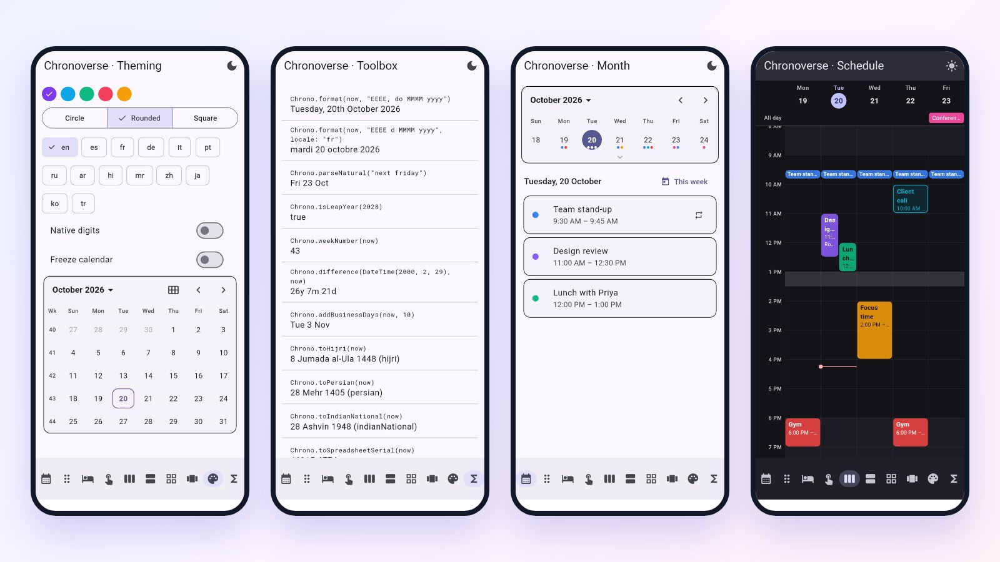
| Area | Functions |
|---|---|
| Basics | now today tomorrow yesterday isLeapYear daysInMonth daysInYear weekNumber weeksInYear quarter dayOfYear isWeekend isPast isFuture isSameDay isValidDate isValidYmd |
| Arithmetic | addDays addWeeks addMonths addYears addBusinessDays businessDaysBetween daysBetween weeksBetween monthsBetween yearsBetween difference age nextAnniversary datesBetween monthMatrix easter nthWeekday |
| Format & parse | format parse parseNatural timeAgo formatDuration formatHms countdown monthNames weekdayNames |
| Conversions | toHijri toPersian toIndianNational toBuddhist toJulianCalendar fromCalendar toJulianDay toUnix fromUnix toUnixMillis fromUnixMillis toSpreadsheetSerial fromSpreadsheetSerial atOffset convertOffset toIso fromIso |
| Time of day | minutesOfDay isTimeBetween roundTime partOfDay |
| Extras | zodiacSign chineseZodiac moonPhase moonPhaseName |
Chrono.addMonths(DateTime(2025, 1, 31), 1); // 2025-02-28, never spills into March
Chrono.addYears(DateTime(2024, 2, 29), 1); // 2025-02-28
Chrono.age(DateTime(2000, 2, 29)); // whole years, leap-day safe
Chrono.difference(start, end); // years, months, days, hours…
Chrono.businessDaysBetween(a, b, holidays: holidays);
Chrono.isTimeBetween(now, '22:00', '06:00'); // night shift, crosses midnight
Chrono.format(now, "EEE, d MMM yyyy 'at' h:mm a");
Chrono.parse('12/25/26', 'MM/dd/yy');
Chrono.parseNatural('end of month');
Chrono.toPersian(now); // CalendarDate(year, month, day)
Chrono.fromCalendar(CalendarDate(CalendarSystem.hijri, 1448, 9, 1));| Token | Meaning | Token | Meaning |
|---|---|---|---|
yyyy yy | year | HH H | hour 0–23 |
MMMM MMM MM M | month name / number | hh h | hour 1–12 |
dd d do | day / ordinal day | mm m | minute |
EEEE EEE E | weekday name | ss s SSS | second / millisecond |
Q | quarter | a | AM / PM |
w | ISO week | Z | UTC offset |
D | day of year | 'text' | literal text |
CalendarEvent carries everything a full calendar system needs.
| Field | Purpose |
|---|---|
id title description location color | Basics. |
start end isAllDay timeZone | When, in which zone. |
recurrence exceptionDates additionalDates | Repeating rules, skipped and extra dates. |
organizer attendees | People, with responses, optional flag and resources (rooms). |
reminders | Notification, email or popup, any time before. |
status visibility showAs type | Confirmed / tentative / cancelled, public / private, busy / free, normal / out of office / focus time / working location / birthday / task / reminder. |
url meetingUrl calendarId data | Links, owning calendar, and any custom payload of your own type. |
final rule = RecurrenceRule.parse('FREQ=MONTHLY;BYDAY=-1FR;COUNT=12');
rule.describe(); // "Every month on the last Fri, 12 times"
rule.occurrences(DateTime(2026, 1, 30)).take(3);
RecurrenceRule.weekly.copyWith(byWeekdays: [ByWeekday(DateTime.monday), ByWeekday(DateTime.thursday)]);
RecurrenceRule.weekdays; // also daily, weekly, monthly, yearly
events.occurrencesIn(DateRange.month(DateTime.now())); // expanded, sorted
events.groupByDay(DateRange.month(DateTime.now())); // Map<DateTime, List<EventOccurrence>>
events.search('review');
events.involving('sam@example.com');
Schedule.freeSlots(events.on(today), from: today.atTime(9), to: today.atTime(17));
Schedule.slots(from: today.atTime(9), to: today.atTime(17),
length: const Duration(minutes: 30), busy: events.on(today));
final text = ICalendar.encode(events, calendarName: 'Team'); // .ics export
final imported = ICalendar.decode(text); // .ics importChronoTimeZone includes about 60 common zones with daylight-saving rules for North America,
Europe, Australia and New Zealand. Gaps (clocks jump forward) and overlaps (clocks fall back) are handled.
final kolkata = ChronoTimeZone.get('Asia/Kolkata');
final newYork = ChronoTimeZone.get('America/New_York');
final meeting = kolkata.fromWall(2026, 10, 20, 19, 30); // ZonedDateTime
kolkata.convert(DateTime(2026, 10, 20, 19, 30), newYork); // same instant in New York
newYork.isDst(DateTime.now().toUtc());
newYork.offsetLabel(DateTime.now().toUtc()); // UTC-04:00
ChronoTimeZone.ids; // every known id
// Add or override a zone
ChronoTimeZone.register(const ChronoTimeZone('Europe/Example', Duration(hours: 1), dst: DstRule.europe));
// Fixed offsets
ZonedDateTime.tryParse('2026-10-20T09:00:00+05:30');ChronoTimeZone.register if a rule
changes before an update is available.ChronoCalendarController.ChangeNotifier, so it fits any state-management approach that
works with listenable objects, including plain setState, ValueListenableBuilder /
ListenableBuilder, and inherited widgets.core.dart, so they can be unit-tested without widgets and reused on a server.Chrono.toIso) and convert to local or zoned time only for
display.data on CalendarEvent<T> to carry your own model, so callbacks give you
your object back without lookups.ListenableBuilder(
listenable: controller,
builder: (context, _) => Text(Chrono.format(controller.focusedDay, 'MMMM yyyy')),
)events rather than a slow eventLoader; Chronoverse indexes them per page.eventLoader, make it a fast map lookup (for example from groupByDay).const ChronoThemeData(...) where possible.testWidgets('picks a day', (tester) async {
DateTime? picked;
await tester.pumpWidget(MaterialApp(home: Scaffold(body: ChronoCalendar(
initialDate: DateTime(2026, 10, 1),
onDaySelected: (d) => picked = d,
))));
await tester.tap(find.text('15'));
expect(picked, DateTime(2026, 10, 15));
});Pass a fixed initialDate in tests so results do not depend on the current day.
| I want to… | Use |
|---|---|
| Show a month and pick a day | ChronoCalendar(onDaySelected: …) |
| Pick a range | mode: ChronoSelectionMode.range or showChronoRangePicker |
| Pick several days | mode: ChronoSelectionMode.multiple or showChronoMultiDatePicker |
| Show one week, expand on tap | expandable: true + controller.showWeekOf(day) |
| Jump quickly to a year | Tap the title, or ChronoYearPicker |
| Let users type a date | ChronoDateField |
| Birthday input | ChronoDateWheelPicker or showChronoWheelPicker |
| Hotel or travel booking | ChronoVerticalCalendar + DateAvailability |
| Appointment slots | ChronoWeekStrip + Schedule.slots |
| Day or week planner | ChronoScheduleView |
| Notes and cards on days | markerStyle: ChronoMarkerStyle.chips + ChronoDragItem |
| Upcoming list | ChronoAgendaView |
| Habit or activity tracker | ChronoHeatmap |
| Block days | DateAvailability |
| Lock the calendar | controller.freeze(), readOnly, enabled: false |
| Any date calculation | Chrono.* |
| Import / export calendars | ICalendar.decode / ICalendar.encode |